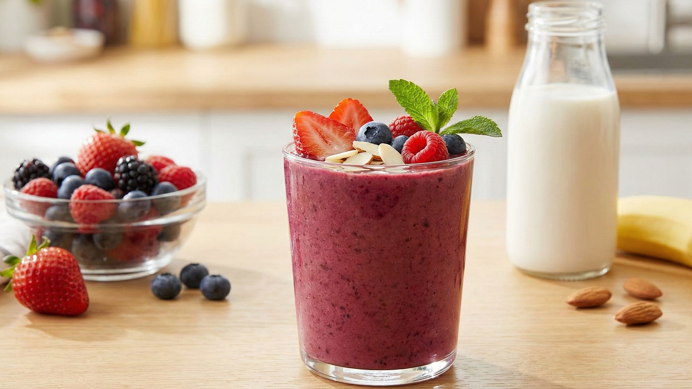
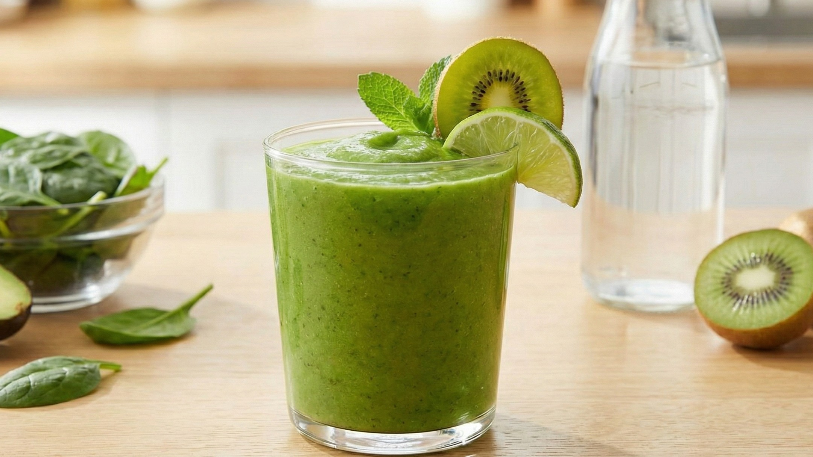

Inner Care Recipes
花嫁のための「飲む美容液」レシピ
「高い美容液を使っているのに、肌の調子が上がらない…」
「エステに通っているけど、背中ニキビが繰り返す…」
そんな花嫁様へ。その原因は、もしかすると「内臓の疲れ」かもしれません。
肌は内臓の鏡です。どんなに高級な化粧品を塗っても、腸内環境が荒れていては、肌に透明感は生まれません。
栄養士としておすすめしたいのは、消化の負担を減らしながら、高濃度の美容成分をダイレクトに届ける「スムージー美容」です。
1. くすみ払い！抗酸化ベリーの「透明感」スムージー
栄養士の解説：なぜベリーが必要？
挙式準備のストレスや、前撮りでの紫外線ダメージ。これらは体内で「活性酸素」を発生させ、肌をサビ（酸化）させます。これが「くすみ」の正体です。
ベリー類に含まれるアントシアニンやビタミンCは、この活性酸素を除去する最強の掃除屋。
朝一番にこれを飲むことで、寝ている間に溜まった老廃物を排出し、内側から発光するような透明感を作ります。

- 冷凍ミックスベリー：1/2カップ
- バナナ：1/2本
- アーモンドミルク（無糖）：150ml
- はちみつ：小さじ1（お好みで）
※アーモンドミルクのビタミンE（若返りのビタミン）との相乗効果で、さらなる美肌効果が期待できます。
2. 化粧ノリUP！アボカドの「潤いチャージ」スムージー
栄養士の解説：良質な油分で「蓋」をする
「オイリー肌だから」と油分を避けていませんか？実は、良質な油分が不足すると、肌は自らを守ろうとして過剰に皮脂を出し、逆にテカリや化粧崩れの原因になります。
アボカドに含まれるオレイン酸やリノール酸は、肌の細胞膜を作る大切な材料。「食べる美容液」として内側から潤いの膜を張り、エアコンの乾燥にも負けない、ふっくらとした「高見え肌」を作ります。

- アボカド：1/4個
- キウイ：1個
- 水 または ココナッツウォーター：150ml
- レモン汁：少々
※キウイのビタミンCと一緒に摂ることで、コラーゲンの生成も促進され、ハリもアップします。
3. むくみスッキリ！甘酒と豆乳の「温活」ドリンク
栄養士の解説：体温を上げてデトックス
ドレスの試着で「二の腕がパンパン…」とショックを受けたことはありませんか？それは脂肪ではなく、冷えによる「むくみ」の可能性が高いです。
甘酒はアミノ酸が豊富な「飲む点滴」。そこに生姜を加えることで深部体温を上げ、滞っていたリンパの流れをスムーズにします。
夕食前や小腹が空いた時に飲むと、満足感がありながらデトックス効果も抜群。腸内環境が整うことでメンタルも安定し、マリッジブルーの予防にも役立ちます。
- 米麹甘酒（ノンアルコール）：100ml
- 無調整豆乳：100ml
- おろし生姜：少々
※温めて飲むのがおすすめ。ホットにすることで、より高いリラックス効果が得られます。
なぜ、この3つの組み合わせなのか？
今回ご紹介した3つのレシピは、単なる「美味しい飲み物」ではありません。
挙式直前の花嫁様が陥りやすい「3大トラブル」を回避するために計算された組み合わせです。
- ベリー（抗酸化）：ストレスや疲労による「肌のサビ（くすみ）」を除去する。
- アボカド（保湿）：肌のバリア機能を高め、乾燥や化粧崩れを防ぐ。
- 甘酒・生姜（循環）：むくみを流し、スッキリとしたフェイスラインとデコルテを作る。
これらをその日の肌状態に合わせて選ぶ、あるいはローテーションで取り入れることで、外側のエステだけでは届かない「細胞レベルのケア」が可能になります。
高い美容液を一本買い足すよりも、毎朝の一杯を変える方が、肌は正直に応えてくれます。
「食べることは、生きること」。あなたの体を作る食事を少し変えるだけで、挙式当日の輝きは劇的に変わりますよ。
NEXT